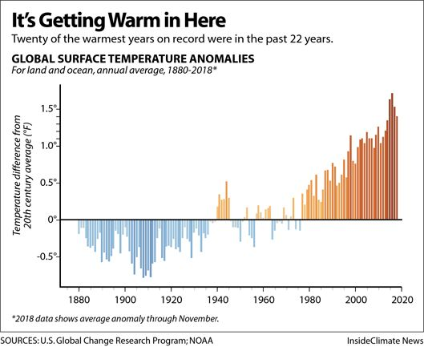

Average global temperature have risen approximately 1.2°C since the pre-industrial age.

Climate change describes long-term changes in weather and temperature. These fluctuations may be caused by significant volcanic eruptions or variations in the sun's activity. However, human activity has been the primary cause of climate change since the 1800s.
Changes in precipitation, temperature extremes and the frequency and severity of extreme weather events such hurricanes, floods, and droughts are all potential effects of climate change on weather patterns.
Sea levels increase as a result of melting polar ice caps, glaciers, and ice sheets due to rising temperatures, endangering coastal communities, ecosystems, and biodiversity.
Significant hazards to human health, livelihoods, and economy are posed by climate change, especially for vulnerable populations and areas. Food and water shortages, population displacement brought on by extreme weather, and a higher chance of conflict over few resources are just a few possible effects.